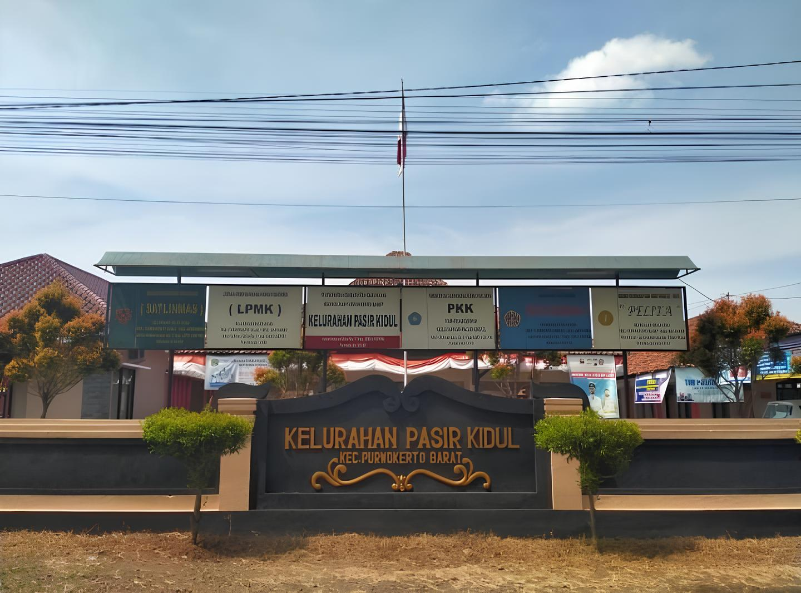

Tentang Desa Pasir Kidul
Desa Pasir Kidul merupakan salah satu desa yang terletak di Kecamatan Purwokerto Barat, Kabupaten Banyumas, Provinsi Jawa Tengah. Desa Pasir Kidul sedikit berbeda dengan desa pada umumnya, dikarenakan wilayahnya yang terbagi menjadi tiga bagian yang berpisah. Namun, karena memiliki letak yang tidak terlalu jauh dari pusat kota Purwokerto, Desa Pasir Kidul memiliki akses yang relatif baik ke fasilitas dan infrastruktur kota seperti pasar, rumah sakit, dan transportasi umum. Hal ini membuat desa Pasir Kidul memiliki keseimbangan antara kehidupan desa yang tenang dan aksesbilitas ke layanan yang lebih modern.

Visi dan Misi
Visi
Menjadi desa yang mandiri, sejahtera, dan berbudaya dengan peningkatan kualitas hidup masyarakatnya.
Misi
- Meningkatkan kualitas pendidikan dan kesehatan untuk seluruh lapisan masyarakat.
- Mengembangkan sektor pertanian dan peternakan untuk meningkatkan pendapatan ekonomi masyarakat.
- Memperbaiki infrastruktur desa, seperti jalan, fasilitas umum, dan sistem sanitasi.
- Mendorong partisipasi aktif masyarakat dalam kegiatan pembangunan dan pelestarian lingkungan.
- Menumbuhkan usaha-usaha lokal yang dapat meningkatkan kesejahteraan masyarakat desa.
Penjelasan Jalan

Jalan Setapak: Jalan Setapak berukuran lebih kecil dari jalan gang dan jalan kabupaten. Dengan lebar jalan rata-rata 1-2 meter.
Jalan Gang: Jalan Gang sedikit lebih besar dari jalan setapak dan lebih kecil dari jalan kabupaten. Dengan lebar jalan rata-rata 3-4 meter.
Jalan Kabupaten: Jalan Kabupaten berukuran lebih besar dari jalan setapak dan jalan gang. Dengan lebar jalan sekitar 8 meter.